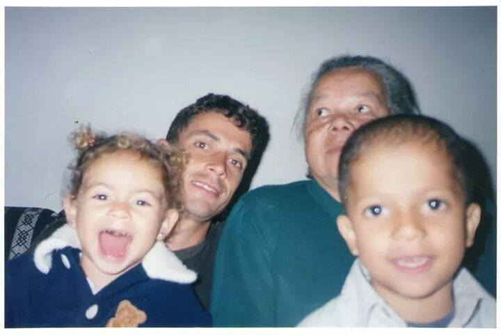

Olá, simmers!
Meu nome é Ariel, sou uma grande fã de 'The Sims 4' e defensora da ODS3 da ONU, que trata de Saúde de Bem-Estar para todos.
Nascida e criada na Zona Leste de São Paulo, cresci no quintal da minha avó morando com meus pais, onde também moram minha tia, duas primas e um primo, com quem eu geralmente brincava na infância.
Minha paixão pelo The Sims surgiu quando eu tinha 12 anos, joguei pela primeira vez no PlayStation 2 do meu primo e foi amor a primeira vista!
O The Sims foi meu companheiro desde então, nos momentos bons e ruins, me ajduando a refletir sobre minha vida, minhas escolhas e sobre mim mesma, me ajudando a me conhecer melhor, saber meus gostos e minha personalidade.
Resiliência, Paixão e Dedicação.
Sempre me dedico em tudo que faço, gosto de fazer o meu melhor e procuro não me comparar com terceiros de forma depreciativa. Entendo que há coisas na vida são processos e que preciso de paciência comigo mesma e dedicação para fazer do processo o melhro possível.
O que faço em minhas horas vagas além de jogar The Sims?
Amo cozinhar e meus pratos preferidos de cozinhar
(e comer) são doces e massas, minha sobremesa preferido é Pavê de Chocolate.
Além de cozinhar eu gosto de ficar na companhia dos meus amigos e do meu namorado, seja assistindo um filme, jogando algum jogo juntos, seja no tabuleiro ou online.
Outro hobbie que eu tenho mas já não faço a algum tempo é fazer recortes de revistas de imagens que eu gosto, geralmente de artistas, e colagens dessas imagens formando mural, era um passatempo relaxante e me ajudava a desestressar.
Meus agradecimento vão para as pessoas que mais me apoiam em meus desafios e estão presentes em momentos de felicidade e de dificuldade.
Infelizmente uma delas não está mais entre nós, mas estará sempre em minha memória e no meu coração, sempre com muito carinho.
O primeiro agradecimento é para minha avó materna Dejanira, quem me ensinou muito sobre humildade e também me ensinou a cozinhar.
Presentes na foto estão: eu, meu tio Renato ao fundo ao lado de minha avó Dejanira e no colo da minha avó está o meu primo Paulinho. Todos nós crecsemos no mesmo quintal.

O segundo e último agradecimento vai para meu namorado Átila, está sempre ao meu lado, estamos juntos a 5 anos e em breve estaremos morando juntos em nosso apartamento.
Nós sempre nos apoiamos em nossas escolhas, por mais loucas que elas pareçam, e sempre estamos ao lado um do outro nos momentos bons e ruins. Sem o apoio dele nesse momento da minha vida tudo seria mais difícil.
Essa foto é uma das minhas preferidas, estamos em um momento descontraído em uma festa fantasia que aconteceu em minha casa.